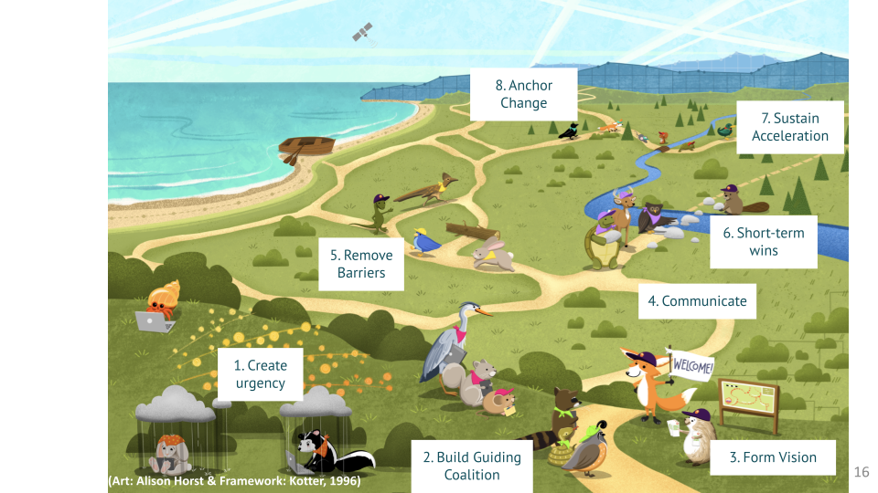
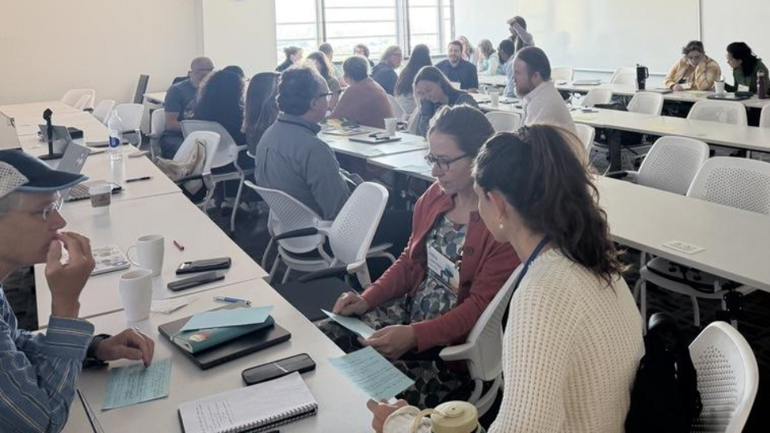

Making Change: What We Learned at the ESIP Session “Bridging Divides and Getting to Yes”
Erin Robinson ![]()
Eli Holmes
Michele Thornton
Michael Liddel
Julie Lowndes
This is a short post about the Hackday we held at NASA User Working Group (UWG) Summit, on the heels of the Hackday we led at the 2026 July Meeting! We were able to reuse our planning and coordinating process and infrastructure, but adapt for a different audience (scientists and support staff from all of the NASA Earthdata DAACs), goals, and time constraints. The goal here was to gather anyone who’s attending the UWG Summit or from on-site at Goddard, and hack on “contributing to open science to make things easier for scientists” from policy, social and technical perspectives.
Quicklinks:
Cross-posted at openscapes.org/blog, nasa-openscapes.github.io/news, nmfs-openscapes.github.io/blog
Making Change: What We Learned at the ESIP Session “Bridging Divides and Getting to Yes”
A vast majority of the work that Openscapes supports is about making change. NASA and NOAA mentors work on big changes like federal agencies moving all their data to the cloud, and many individuals work on smaller changes like making a process a bit more reproducible for future you and future us. However, change can seem like a mysterious process. At the July ESIP meeting, in a session entitled ‘Bridging Divides and Getting to Yes’, we broke change down into bite-sized steps using the Leading Change framework (Kotter, 1996). Kotter identified eight steps to make change:
- Creating or identifying the urgency
- Building a guiding coalition (collaborators to work together, leaders in your network)
- Forming a vision and
- Communicating that vision
- Removing barriers
- Identifying small or short-term wins
- Building momentum around the change
- Finally, anchoring the change in the organization

While these are presented linearly, as we heard in the session and have all experienced, we move back and forth through them.
Four Vignettes on the “Messy Middle” of Change
To explore the framework, we heard four vignettes about the path to change from Eli Holmes (NOAA), Michele Thornton (NASA), Mike Liddel (NOAA), and Julie Lowndes (Openscapes). The speakers were asked to share just a snippet of the change and specifically to highlight the parts where it had been messy or difficult. Between them, the stories touched four common areas of change: tools and technology, people and relationships, resources and funding, and culture and policy.
Eli Holmes, NOAA Fisheries Open Science Lead, described getting GitHub Enterprise adopted across NOAA Fisheries, a tools change that turned out to be a culture and policy change. Her team formed a coalition and spent four months writing a vision even though they half-believed it might never come to fruition. GitHub Enterprise required permission. There was a bright spot: a science center that already had GitHub Enterprise, but when Eli pointed to it, the response was no because it was not on the approved list. How do you get it on the list? IT did not know. Eli continued to investigate how to get on the list and found out that the person who could actually decide was not someone she could email directly. However, during a chance meeting, Eli found herself on a call with that person. While she couldn’t email this person, she could speak up. At the end of the call, she said: “Hey, I have an unrelated question.” That question unlocked everything. It took vision, persistence, being in the right room, and the courage to ask to add GitHub Enterprise to the approved list. (Eli’s slides from the January 2025 ESIP meeting: The GitHub Story at NOAA Fisheries)
Michele Thornton, ORNL DAAC Manager, opened with a familiar slog: enormous amounts of downloaded data instead moving into cloud-native solutions, and the thought “there has to be a better way”. A conversation with the right person surfaced an approach for cloud-native publication, and then her excitement met resistance. The solution didn’t come from winning the argument; it came from relationships: getting the right people in the room with each other and by imparting the right technical vision, the needed collaborations were built to execute the solution together. Because that workflow existed, her team could publish and analyze data in near real-time during the 2024 LA fires. That’s the payoff of a change made before the urgency arrives. Michele is the one who named the session’s shadow title: sometimes getting to yes is not accepting no.
Mike Liddel, Acting Assistant Chief Data Officer for NOAA Fisheries, told a story of one change laying the foundation for the next. Starting an Open Science Community of Practice at NOAA several years ago took vision and real effort, building a coalition of the eager (an important distinction from the willing) around open, collaborative work. He anchored this community in the organization. So when a new directive to move to the cloud came with no additional time or money, supplying the urgency required for change, the community was ready. The coalition of the eager could support many more in the migration to the cloud.
Julie Lowndes, Openscapes Founder and Director, brought the resources-and-funding story about making the change to become a small business. In the early days of Openscapes, she was working full-time but paid half-time to stretch the support at the university. However, the university couldn’t accept payments in the configurations federal teams needed, which meant teams of feds and contractors who wanted to participate together could not do so. Universities can also be slow to vendor outside organizations. This did not align with Openscapes’ values of wanting to pay people quickly and easily for their work. Julie decided to become a small-business owner to overcome those procurement challenges. It let her accept two payments so whole teams could join, and it made payments faster. The path to business owner has not been easy, and sometimes it is very lonely. From this, she offered the approach she reaches for when change gets hard: Pause (take a beat), Fork (what have you seen before? who has attempted this?), and Do — ask for help. You don’t have to do it alone.
The Interactive Change Lab
Listening to these stories, it’s easy to see the framework shine through. We know that we learn by doing, and we wanted to activate this learning in real time. We took an experimental approach that Erin Robinson designed and called the Interactive Change Lab. The confines of the 30-minute lab provided the urgency that normally kicks off a change cycle. As participants arrived at the start of the session, we used the attendance list in the ESIP agenda doc as a first step to prompt them to consider a change they wanted to make. The changes the participants named fell into the same buckets as the vignettes (tools, people, resources, culture) and ranged from federal data infrastructure to giving yourself permission to pivot careers.
The lab started with each person receiving a blank 5x8 notecard and writing down a change they wanted to make. It turned out it was shockingly hard to write down a change you want to make on the spot, even for the facilitators. That act of writing on the notecard alone was clarifying. We then passed the cards around, shuffled, and responded to four prompts, one per round:
- Build the coalition: Who could help, champion, or unblock this?
- Communicate the vision: What would make someone say yes to this?
- Remove barriers: What are the objections? Suggest a counter.
- Generate a short-term win: What’s a near-term action? What could make it smaller or faster? What’s the 15% version?
After each prompt, we shuffled again, so every card collected input from four different people who had no idea whose problem they were holding.
At the end, cards returned to their owners, and we ran a quick 1-4-All (modified Liberating Structure) to digest the input. By and large, there was something useful on every card, and people were genuinely surprised how valuable anonymous feedback from someone outside their context turned out to be.

Strategies We Synthesized
At the close, we harvested strategies from the cards and the room onto the whiteboard:
- Write it down. Naming the change is harder and more clarifying than it sounds.
- Reframe the problem. Many people said the most valuable thing they received was a reframe. Refine and test how you define the problem. Ask: what is this problem like, and how has that been solved before?
- Surround yourself with a smart, diverse team, and do the work of translating the technical problem so they can help.
- Get to the small yes. Find one person to say yes, then let momentum (and a little FOMO) work on the rest.
- Make the case in their terms. Show how the change benefits the person saying yes and their organization: metrics, demos, the 15% version they can see working.
- Look at lots of solutions before narrowing down.
- Take a step. Any step. And sometimes, take a step back and evaluate where you are.
Make Your Own Change
This Interactive Change Lab format is completely reusable for a team meeting, a working group, or even just yourself:
- Write down a change you want to make. (Expect this to be hard.)
- Answer the four prompts (coalition, vision, barriers, short-term win) yourself, or better, hand your card to people who don’t know your context.
- Ask “why now?” If you can’t answer it, that might be the first thing to work on.
- And as Julie said: Pause, fork, do: take a beat, look for who has done something like this before, and then act: this is often asking for help.
Beyond this short activity, the Openscapes’ Approach Guide has many resources that your group might find helpful to make change. The Openscapes Champions pathways template (drawn from Lowndes et al., 2017) is an excellent resource for mapping out the vision and steps for your change and collaborating on them with your team. The Reflections program also provides a quick three-week scaffold to kick-start change.
Good ideas don’t become reality on their own. But as our four speakers and dozens of notecards showed us, coalitions can be built before you need them, and a no is often the easiest first position. And sometimes getting to yes means persistently not taking no.
Finally, thank you to our speakers — Eli Holmes, Michele Thornton, Mike Liddel, and Julie Lowndes — for sharing the messy middle of making change, and to everyone in the room (and online) who brought real changes to the table and generous feedback to each other’s cards. Thank you Erin Robinson for designing and leading the session, the Interactive Change Lab was so valuable and we’re excited to see where people reuse it. This session only worked because of everyone’s contributions. Thank you!
Citation
@online{robinson2026,
author = {Robinson, Erin and Holmes, Eli and Thornton, Michele and
Liddel, Michael and Lowndes, Julie},
title = {Making {Change:} {What} {We} {Learned} at the {ESIP}
{Session} “{Bridging} {Divides} and {Getting} to {Yes}”},
date = {2026-09-03},
url = {https://openscapes.org/blog/2026-09-03-getting_to_yes/},
langid = {en}
}